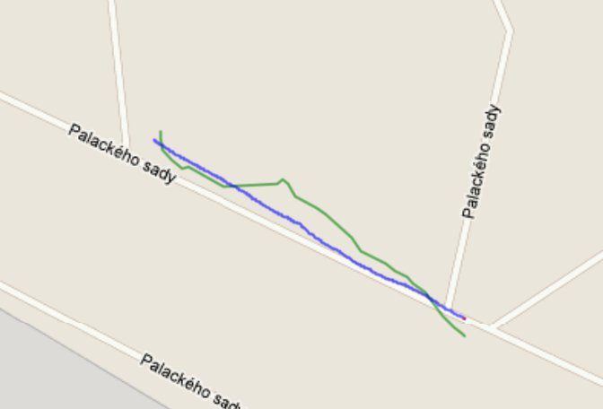

<meta charset="utf-8">
<meta name="viewport" content="width=device-width, initial-scale=1">
<title>ARBot – Robotem Rovně 2011</title>
<link rel="icon" href="../assets/img/arbot-logo.png">
<link rel="preconnect" href="https://fonts.googleapis.com">
<link rel="preconnect" href="https://fonts.gstatic.com" crossorigin>
<link rel="stylesheet" href="https://fonts.googleapis.com/css2?family=Archivo:wght@500;600;700&amp;family=JetBrains+Mono:wght@400;600&amp;family=Newsreader:opsz,wght@6..72,400;6..72,500;6..72,600&amp;display=swap">
<link rel="stylesheet" href="../assets/site.css">

<header class="sitehead">
  <a class="brand" href="../index.html"><span>ARBot</span></a>
  <nav>
      <a href="../index.html">Úvod</a>
      <a href="../pages/prezentace.html">Jak to funguje</a>
      <a href="../pages/historie.html">Historie</a>
      <a href="../pages/umisteni-v-soutezich.html" class="on">Umístění v soutěžích</a>
      <a href="../pages/verze.html">Verze</a>
      <a href="../pages/technicke-clanky.html">Technické články</a>
      <a href="../pages/kontakt.html">Kontakt</a>
  </nav>
</header>
<main>
  <div class="pagehead">
    <p class="eyebrow">Robotem rovně &middot; 2011</p>
    <h1>Robotem Rovně 2011</h1>
  </div>

<section class="first">
  <p>Tak další ročník soutěže autonomních robotů Robotem Rovně je za náma. Musím se přinat, že výsledek byl trošku zklamáním, ale to předbíhám.</p>

  <p>Přes zimu se podařilo dotáhnout algoritmy pro fůzy dat z odometrie, AHRS a GPS, ambice byly veliké.</p>

  <p>Na místo jsme dorazili za 5 minut 12, homologace a za chvilku na start 1. kola. 3, 2, 1, start robot se rozjel, ale místo aby jel poslusně směrem k cíli udělal oblouček a zamíril doprava. Objel keřík, projel znovu startem a zamířil k Neumětelum. Bylo to hrozné sklamání. Do startu dalšího kola jsem se snažil odhalit problém, ale žádný výsledek, robot stále táhnul doprava. Nadešel čas pro další kolo. Robot tentokrát opět jel doprava, ale udržel se na cestě, jenže první odbočkou vpravo zas vyrazil k Neumětelum. Ach jooo, co se to děje. Najednou mi svitlo. Robot jezdi podle mapy a svou pozici na startu odvozuje z GPS. Zapomel jsem tam mapu z Prahy a robot poslušně jel na hřiště u nas před barákem. Chybka byla opravena a v posledním kole slušných 170 metrů. Celkové 9. místo bylo zklamáním, ale za chyby se platí.</p>

  <p>Každopádně RoRo 2011 bylo dobře zorganizové a velmi příjemné klání. Diky organizátorům a příští ročník dopadnem snad lépe.</p>

  <figure>
    
    <figcaption>Trajektorie robotu (modře), údaje z GPS (zeleně)</figcaption>
  </figure>
</section>

<section>
  <p><a href="umisteni-v-soutezich.html">&larr; Zpět na Umístění v soutěžích</a></p>
  <p class="mono" style="font-size:13px;color:var(--muted)">Text a obrázky jsou převzaté z původního webu na Google Sites; znění článku je beze změn. Odkaz na článek o soutěži na <span class="mono">kufr.cz</span> na původním webu už nefunguje, proto tu není.</p>
</section>

<footer>
  <div class="foot-in">
    <span class="mono">ARBOT &middot; AUTONOMNÍ MOBILNÍ ROBOT</span>
    <span>Zdrojový kód, vývojová dokumentace a měření:
      <a href="https://github.com/AlesRuda/ARBot3">github.com/AlesRuda/ARBot3</a></span>
  </div>
</footer>
</main>
